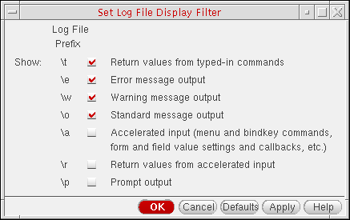

Changing the Log Filter Opti ons
By default, only error messages, warning messages, program results, and results of running a function appear in the output area of the Command Interpreter Window (CIW). All other log file contents are filtered out.
To specify what information appears in the output area of the Command Interpreter Window:
-
Choose Options – Log Filter.
The Set Log Display Filter form appears.A check box for each item type appears on the form. The backslash-character that appears at the beginning of the line in theCDS.logfile for each item type appears to the left of each check box. One backslash-character you might see in theCDS.logfile for which there is no check box on this form is\tfor typed input: Typed input always appears in the output area. - Select check boxes to indicate what items you want to see in the output area
-
Click OK.
The text in the CIW output area is updated to display the items you specified.
To apply these settings to subsequent sessions, type these changes in your .cdsenv file.
The prefix \# is used in the CDS.log file to filter out statistic information such as output memory use and X resource ID.
Related Topics
Set Log File Display Filter Form
Return to top